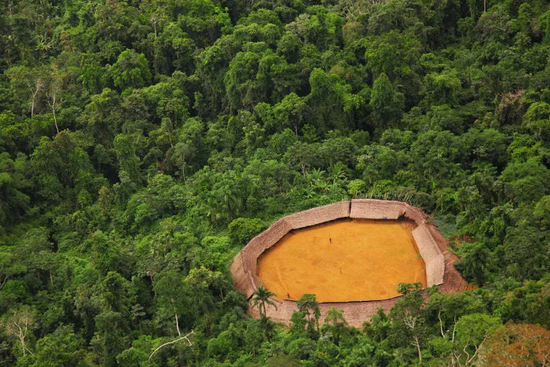

Os Yanomami são um povo indígena que habita a região da Amazônia, em território brasileiro e venezuelano. Com uma história rica e ancestral, os Yanomami possuem uma cultura única e distintiva, caracterizada por seus costumes e tradições profundamente enraizados. A sociedade Yanomami é baseada em comunidades de aldeias, com cada aldeia sendo composta por várias famílias. Essas famílias vivem em casas circulares conhecidas como "yanos" ou "shabono". Essas construções são feitas com materiais naturais, como folhas de palmeira e madeira, e são projetadas para abrigar várias famílias em compartimentos separados ao redor de um pátio central.
A subsistência dos Yanomami é baseada principalmente na caça, pesca, coleta de frutas e na agricultura de roçado. Os homens são responsáveis pela caça, usando arcos e flechas para capturar animais como veados, porcos-do-mato e aves. As mulheres são hábeis na coleta de frutas, raízes e vegetais, além de cuidarem dos afazeres domésticos e da agricultura. O cultivo de roçados é uma atividade fundamental para a comunidade, onde são cultivadas principalmente mandioca, milho e batata-doce.
A cultura Yanomami é rica em rituais e cerimônias. Um dos aspectos mais notáveis de sua cultura é o xamanismo. Os xamãs desempenham um papel importante como curandeiros e líderes espirituais, acreditando que têm a capacidade de se comunicar com os espíritos e de curar doenças através de rituais e do uso de plantas medicinais.
Os Yanomami também são conhecidos por suas pinturas corporais, adornos e cerâmicas. Eles usam pigmentos naturais, como o urucum, para criar desenhos intricados em seus corpos, além de fazerem uso de penas, sementes e outros materiais para criar colares, pulseiras e outros adornos.
A vida social dos Yanomami é organizada em torno de laços de parentesco e de um sistema de clãs. O casamento é uma parte importante da cultura Yanomami, com a prática da poligamia sendo comum. As alianças matrimoniais fortalecem os laços entre as comunidades, promovendo a troca e o compartilhamento de recursos.
Infelizmente, a cultura Yanomami tem enfrentado diversos desafios nos últimos anos, como invasões de garimpeiros ilegais, desmatamento e doenças introduzidas por pessoas de fora. Esses problemas têm impactado negativamente a vida dos Yanomami, ameaçando seus costumes, tradições e modos de vida. No entanto, os Yanomami continuam a lutar pela preservação de sua cultura e pelo reconhecimento de seus direitos territoriais. Organizações indígenas e ativistas têm trabalhado em parceria com os Yanomami para proteger suas terras e promover a conscientização sobre sua cultura e seus desafios.
Os Yanomami são um povo notável, cuja cultura é profundamente enraizada em sua relação com a natureza e com seus ancestrais. Sua história, tradições e costumes únicos merecem ser preservados e valorizados como parte do patrimônio cultural da humanidade.